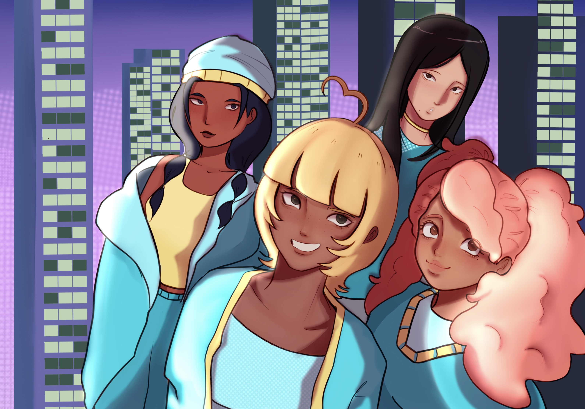
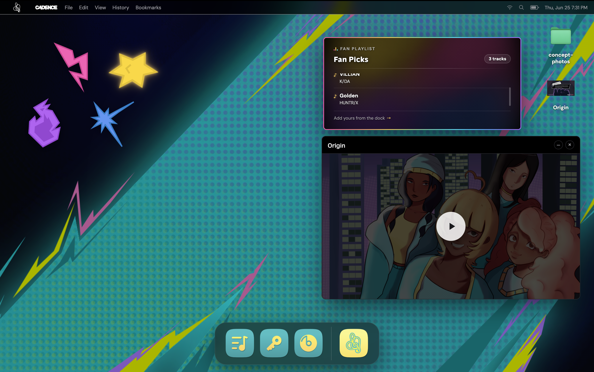
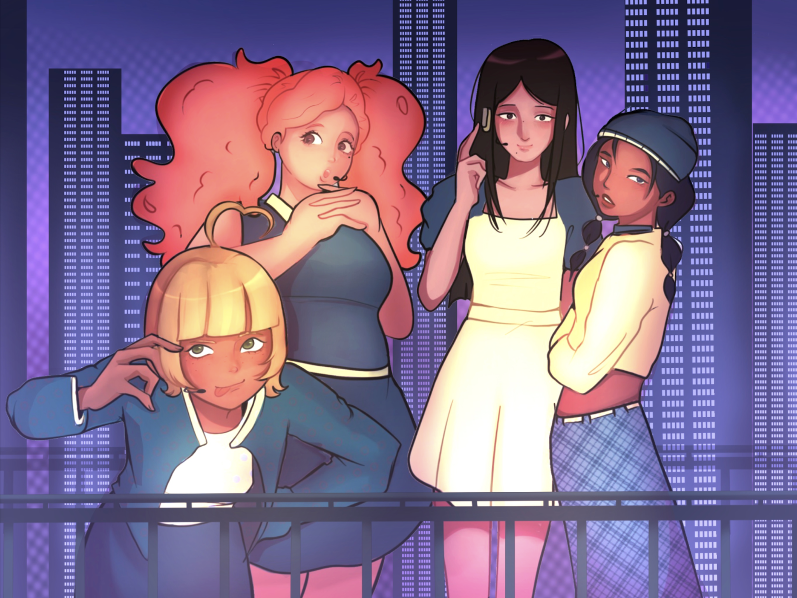
Challenge
With such an open-ended brief - “anything & everything you want” - we had a lot of creative freedom. Rather than starting with a specific problem to solve, we focused on what kind of world we wanted to create and how Adobe Firefly could help us bring it to life.
My Role
My role focused on initial research, content architecture, and the transmedia experience. I designed and coded the website end-to-end using vanilla HTML, CSS, and JavaScript, bringing the visual identity, content, and interactions together into a cohesive digital experience.
DISCOVER
We didn't know where to start. But we all knew one thing: WE LOVE KPOP!
Then a million questions followed. After a long conversation, one question stuck out to us: why do girls in games and media look the way they do? That took us down a rabbit hole into K-pop, girl groups, and the way “girl power” gets packaged through branding and entertainment.
Which left us wondering: when does empowerment become a product?
PROBLEM
DEFINE
I led research into transmedia campaigns across industries. From how K/DA's members are built up and portrayed across social platforms, to immersive world-building projects like Prometheus. Watching how these narratives shift between physical and digital touchpoints directly shaped how we mapped out Cadence's own presence.
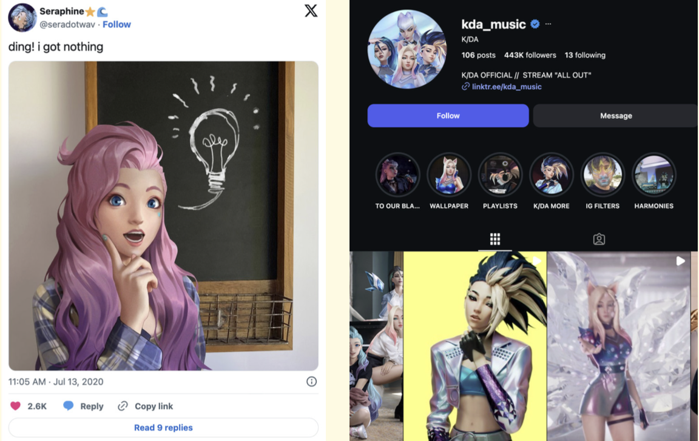
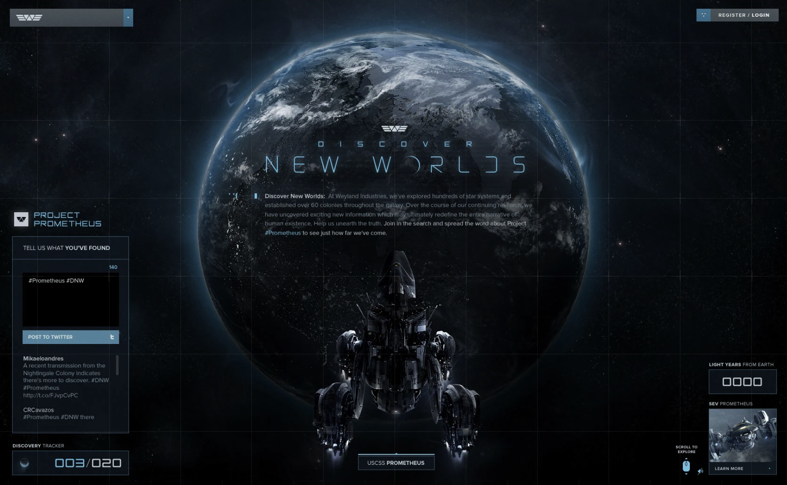
Field reviews: K/DA's coordinated storytelling vs. Prometheus' immersive world-building
Working with Mhayvine, we sent a survey out into the world to actually understand our audience, where I analysed the responses.
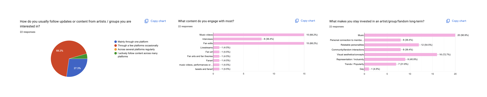
Synthesising survey responses
HOW MIGHT WE...
CLARIFY
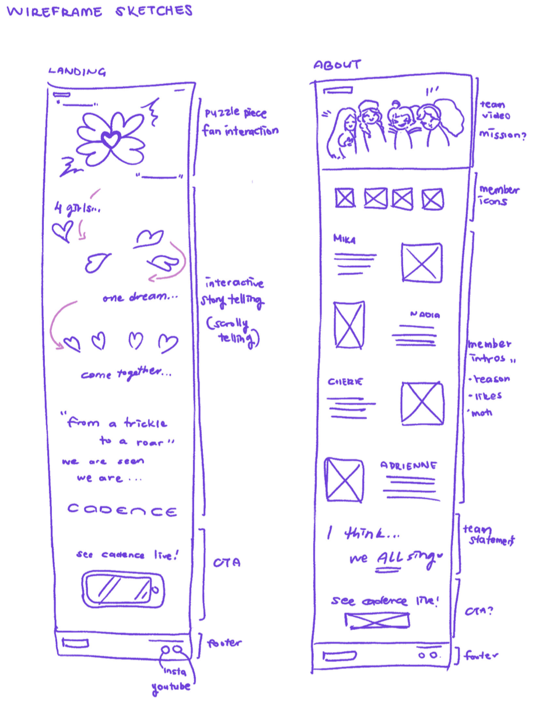
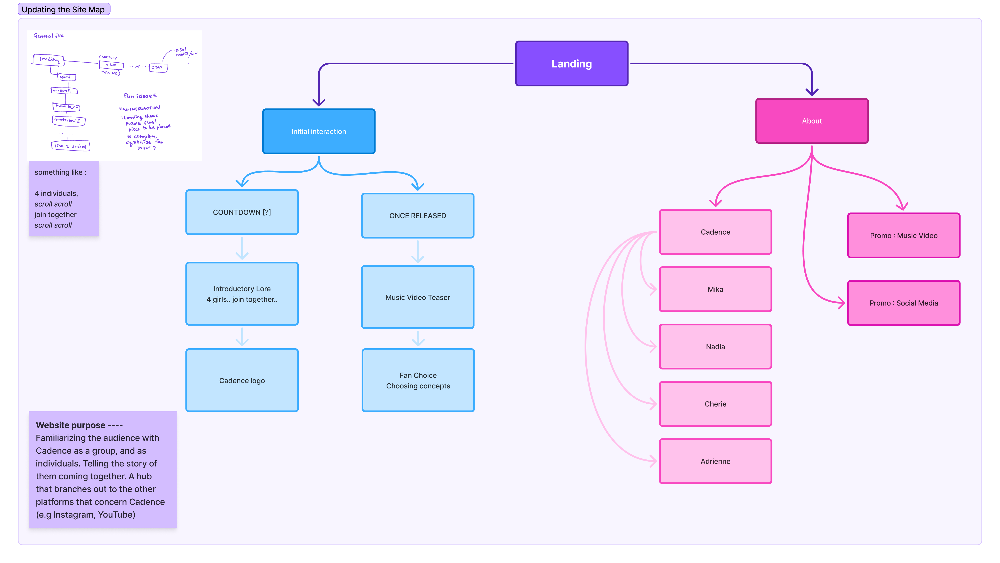
Mapping out the transmedia touchpoints — website, socials, video, album — all feeding back into one hub
A field review of aespa’s website shifted our direction, inspiring us to turn Cadence’s debut into a cohesive, interactive desktop-style space centred around fan engagement and getting to know each member.
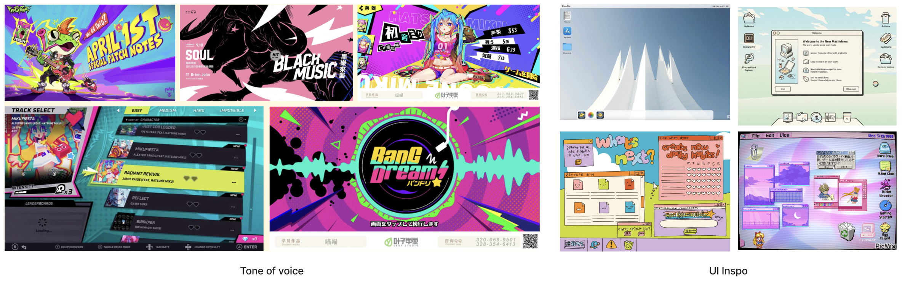
Revised moodboards
CONCEPTUALISE
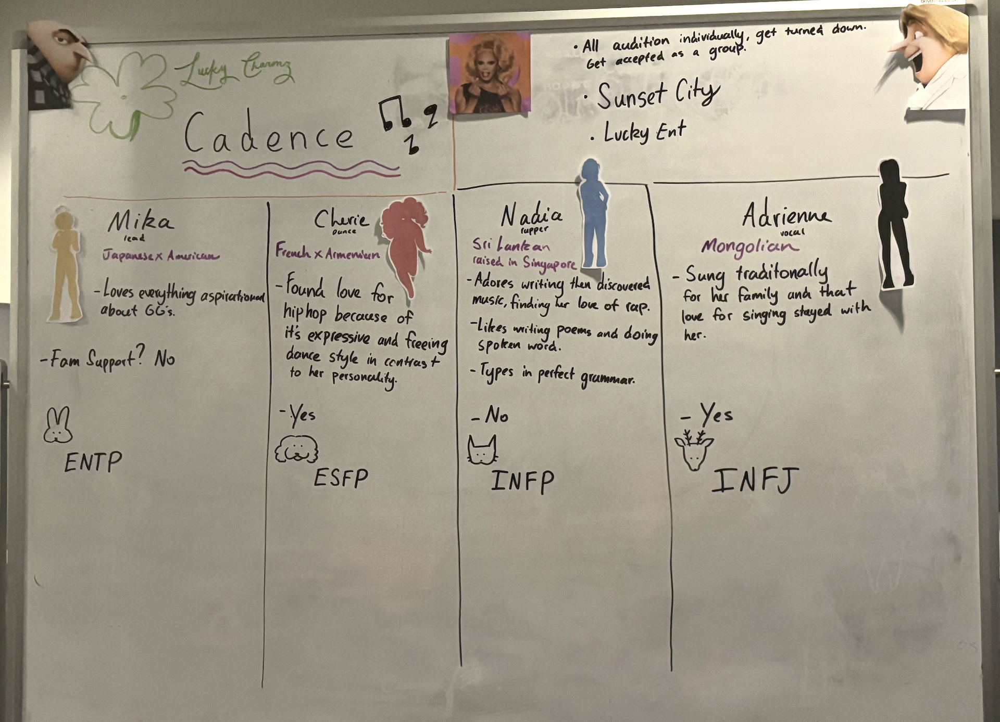
Worldbuilding workshop
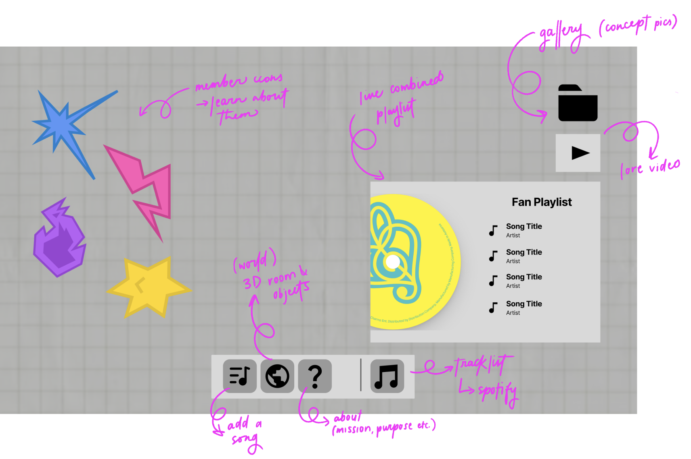
Synthesising survey responses
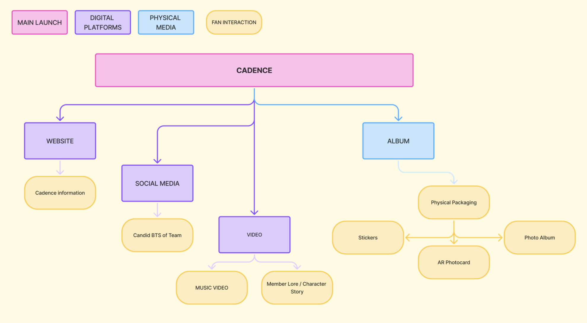
Sitemap and touchpoints draft
I started with prototyping to test the website layout, then used that as the foundation to develop, brand and refine the final version. I built the site in HTML, CSS and JavaScript, using Claude AI to help kickstart the initial build, debug along the way, and refine the interactive bits.
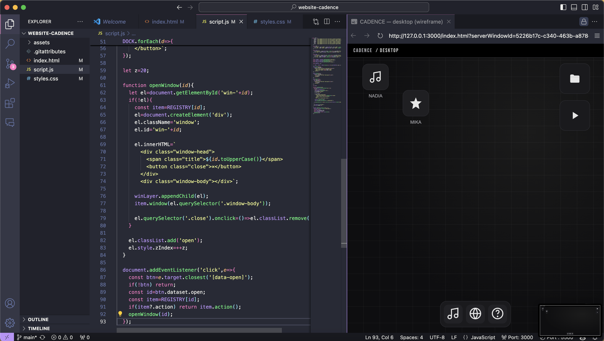
Kickstarting the code and refining it into the desktop skeleton
We also condensed an earlier idea (a fan billboard) into something simpler and more fun: a shared playlist, where fans could drop their own fight songs straight into the site.
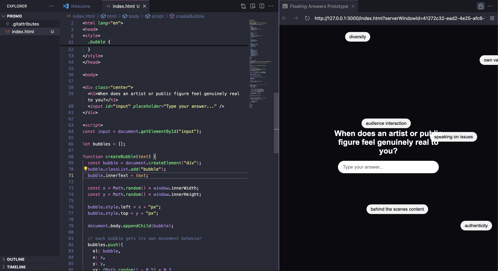
Prototyping the shared playlist feature, then reusing the tested code inside the live site
OUTCOME
Our virtual girl group whose debut is supported by transmedia collateral across platforms. My outcome was in charge of the website and content planning and architecture of how the girls would live online.
Loveday Tan (Motion Designer) worked on all the artwork and motion piece, Mhayvine Capulong (Interactive Designer) working on the 3D room and in collaboration with content planning, and Chance Tavita-Jackson (Graphic Designer) working on the branding and values.
Try the website prototype! ↗ Instagram ↗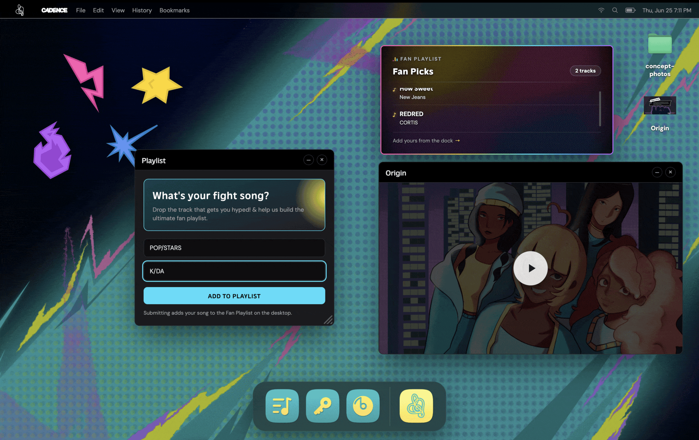
Website acting as a hub/home base for the fans.
Walking through the shared playlist on the live site
REFLECTION
This project taught me just as much about collaboration as it did design. We had different ideas and disagreements along the way, but learning to listen, compromise, and work through them made the final outcome stronger.
I also gained confidence building a website end-to-end, from coding and debugging to refining interactions. If I did it again, I'd establish key visual assets and decisions earlier to make the process smoother.
SEE NEXT